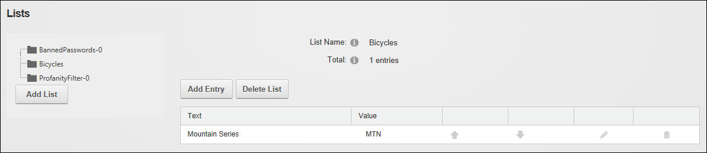

Adding a Parent List
How to add a parent list to the site using the Admin Lists page. This task can be used for custom modules that use lists. Lists created by users other than SuperUsers are automatically encoded for security purposes to prevent HTML and JavaScript being injected into the page.
- Navigate to Admin > Advanced Settings >
 Lists.
Lists.
- Click the Add List button.
- In the List Name text box, enter a name for the list. E.g. Bicycles
- At Parent List, leave this field set to None Specified.
- In the Entry Text text box, enter the first entry (item) that will be in this list. E.g. Mountain Series
- In the Entry Value text box, enter the identifier or code for the first entry. E.g. MTN
- Optional. At Enable Sort Order, mark
 the check box if you want to be able to reorder the entries in this list - OR - Unmark
the check box if you want to be able to reorder the entries in this list - OR - Unmark  the check box to use alphabetical sort order for list entries.
the check box to use alphabetical sort order for list entries.

- Click the Save button. This displays the new list on the left side of the module.

- You can now add additional list entries to this list. See "Adding a List Entry"